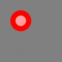

ru:color
Color
Формат:
color имя_цвета
color( имя_цвета )
color rgb_значение
color( rgb_значение )
Описание:
Устанавливает текущий цвет для операций рисования в значение имя_цвета; или в RGB цвет из компонент красный, синий, зеленый; или в rgb_значение. Есть специальный цвет с именем CLEAR и значением -1. Если текущий цвет установлен в это значение, то пикселы или фигуры, рисуемые этим цветом будут стирать пикселы окна графического вывода делая их прозрачными. Это особенно удобно при создании спрайтов через команду Spriteslice. === Название цвета и их RGB значения ===|Название цвета|Вид цвета|RGB значение|
| black<td width=“10%” style=“background-color: rgb(0,0,0);”> | 0, 0, 0 |
| white<td width=“10%” style=“background-color: rgb(255,255,255);”> | 255, 255, 255 |
| red<td width=“10%” style=“background-color: rgb(255,0,0);”> | 255, 0, 0 |
| darkred<td width=“10%” style=“background-color: rgb(128,0,0);”> | 128, 0, 0 |
| green<td width=“10%” style=“background-color: rgb(0,255,0);”> | 0, 255, 0 |
| darkgreen<td width=“10%” style=“background-color: rgb(0,128,0);”> | 0, 128, 0 |
| blue<td width=“10%” style=“background-color: rgb(0,0,255);”> | 0, 0, 255 |
| darkblue<td width=“10%” style=“background-color: rgb(0,0,128);”> | 0, 0, 128 |
| cyan<td width=“10%” style=“background-color: rgb(0,255,255);”> | 0, 255, 255 |
| darkcyan<td width=“10%” style=“background-color: rgb(0,128,128);”> | 0, 128, 128 |
| purple<td width=“10%” style=“background-color: rgb(255,0,255);”> | 255, 0, 255 |
| darkpurple<td width=“10%” style=“background-color: rgb(128,0,128);”> | 128, 0, 128 |
| yellow<td width=“10%” style=“background-color: rgb(255,255,0);”> | 255, 255, 0 |
+
Смотри также:
Пример:
clg color rgb(128,128,128) rect 0,0,graphwidth, graphheight color red circle 100,100,50 color rgb(255,160,160) circle 100,100,25
Будет изображено

{kind=link}
ru/color.txt · Last modified: 2013/02/09 21:16 by admin